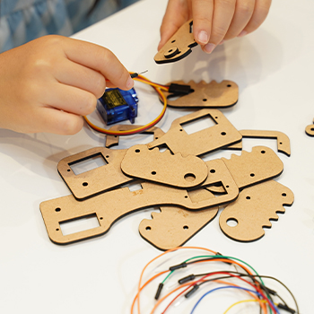

2020年に小学校で「プログラミング教育」が必修化されました。
テクノロジーは日々進化し、ITやAI（人工知能）は今後さらに普及が加速することが予測されます。コンピュータも現代社会で身近で欠かせない存在となり、その仕組みを正しく理解することは重要になってきました。
また、仕組みを理解するだけではなく「論理的思考をし、自ら創造する」プログラミングは、子ども達の知的探究心を呼び起こし、人間的な成長も促します。
プログラミング学習塾SKILSET、小学生〜中学生向けのプログラミングスクールです。小学１年生からプログラミングを学ぶことができます。少人数制で、一人ひとりへの丁寧なフォロー・アットホームな雰囲気が特長です。
また、子ども達の考える・成長する力を養うことを大事にしています。